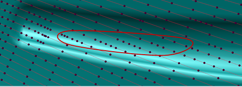
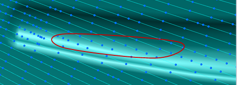

Variable-axis surface contouring enhancements
What is it?
Enhancements to variable-axis surface contouring operations do the following:
-
Improve the surface quality when cutting across small features.
NX adds points along the path in high curvature regions.
-
Reduce tool path generation time.
|
 NX 8.5 behavior |
|
 Surface quality in previous releases with fewer points |
Where do I find it?
|
Application |
Manufacturing |
|
Toolbar |
Insert→Create Operation |
|
Menu |
Insert→Operation |
|
Location in dialog box |
Create Operation dialog box→Type group→mill_multi_axis→Operation Subtype group→Variable Contour |